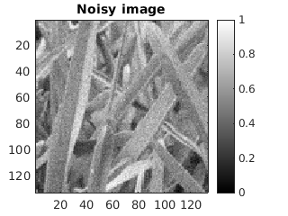
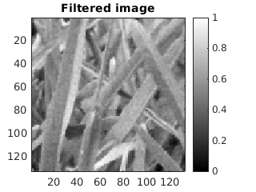
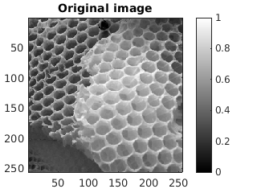
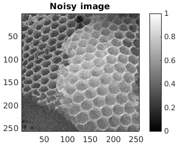
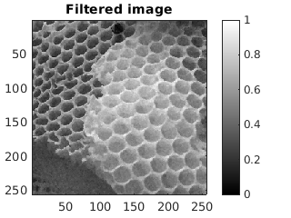
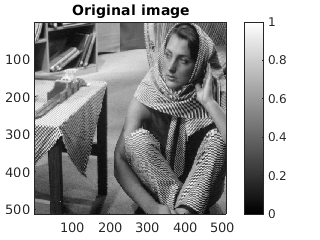
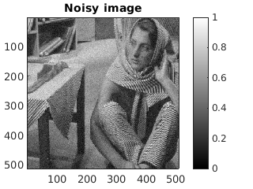
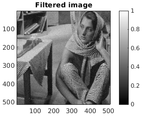
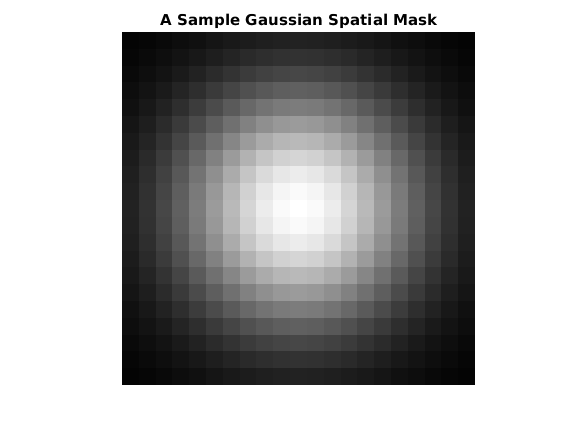

MyMainScript
Contents
First image: GRASS
tic;
fprintf('\nThe images of the grass:\n')
path1 = "../data/grass.png";
im1 = imread(path1);
sp1 = 0.7;
in1 = 0.18;
figure, my_show(im1); title('Original image');
im_noise1 = myNoise(im1);
figure, my_show(im_noise1); title('Noisy image');
im_filt1 = myBilateralFiltering(im_noise1,sp1,in1);
figure, my_show(im_filt1); title('Filtered image');
rmsd1 = myRMSD(im1,im_filt1);
rmsd1_i = myRMSD(im1,myBilateralFiltering(im_noise1,0.9*sp1,in1));
rmsd1_ii = myRMSD(im1,myBilateralFiltering(im_noise1,1.1*sp1,in1));
rmsd1_iii = myRMSD(im1,myBilateralFiltering(im_noise1,sp1,0.9*in1));
rmsd1_iv = myRMSD(im1,myBilateralFiltering(im_noise1,sp1,1.1*in1));
fprintf('The optimal values for SpatialSigma and IntensitySigma are:\n')
fprintf('space_sig = %f , intensity_sig = %f', sp1, in1 )
fprintf('\nThe optimal rmsd is = %f \n', rmsd1)
fprintf('The 4 rmsd values for varying standard deviations are :\n')
fprintf('(0.9sp,in) i) %f \n',rmsd1_i)
fprintf('(1.1sp,in) ii) %f \n',rmsd1_ii)
fprintf('(sp,0.9in) iii) %f \n',rmsd1_iii)
fprintf('(sp,1.1in) iv) %f \n\n',rmsd1_iv)
toc;
The images of the grass:
The optimal values for SpatialSigma and IntensitySigma are:
space_sig = 0.700000 , intensity_sig = 0.180000
The optimal rmsd is = 7.783029
The 4 rmsd values for varying standard deviations are :
(0.9sp,in) i) 7.886987
(1.1sp,in) ii) 7.821745
(sp,0.9in) iii) 7.786468
(sp,1.1in) iv) 7.801721
Elapsed time is 1.231120 seconds.

 
Second image: HONEYCOMB
tic;
fprintf('\nFor the honeycomb images:\n')
path2 = "../data/honeyCombReal.png";
im2 = imread(path2);
sp2 = 0.8;
in2 = 0.1;
figure, my_show(im2); title('Original image');
im_noise2 = myNoise(im2);
figure, my_show(im_noise2); title('Noisy image');
im_filt2 = myBilateralFiltering(im_noise2,sp2,in2);
figure, my_show(im_filt2); title('Filtered image');
rmsd2 = myRMSD(im2,im_filt2);
rmsd2_i = myRMSD(im2,myBilateralFiltering(im_noise2,0.9*sp2,in2));
rmsd2_ii = myRMSD(im2,myBilateralFiltering(im_noise2,1.1*sp2,in2));
rmsd2_iii = myRMSD(im2,myBilateralFiltering(im_noise2,sp2,0.9*in2));
rmsd2_iv = myRMSD(im2,myBilateralFiltering(im_noise2,sp2,1.1*in2));
fprintf('The optimal values for SpatialSigma and IntensitySigma are:\n')
fprintf('space_sig = %f , intensity_sig = %f', sp2, in2 )
fprintf('\nThe optimal rmsd is = %f \n', rmsd2)
fprintf('The 4 rmsd values for varying standard deviations are :\n')
fprintf('(0.9sp,in) i) %f \n',rmsd2_i)
fprintf('(1.1sp,in) ii) %f \n',rmsd2_ii)
fprintf('(sp,0.9in) iii) %f \n',rmsd2_iii)
fprintf('(sp,1.1in) iv) %f \n\n',rmsd2_iv)
toc;
For the honeycomb images:
The optimal values for SpatialSigma and IntensitySigma are:
space_sig = 0.800000 , intensity_sig = 0.100000
The optimal rmsd is = 11.630853
The 4 rmsd values for varying standard deviations are :
(0.9sp,in) i) 11.678195
(1.1sp,in) ii) 11.636229
(sp,0.9in) iii) 11.660659
(sp,1.1in) iv) 11.632214
Elapsed time is 3.037531 seconds.
  
Third image: BARBARA
tic;
fprintf('For the Barbara images:\n')
path = '../data/barbara.mat';
im3 = uint8(load(path).imageOrig) ;
sp3 = 0.9;
in3 = 0.07;
figure, my_show(im3); title('Original image');
im_noise3 = myNoise(im3);
figure, my_show(im_noise3); title('Noisy image');
im_filt3 = myBilateralFiltering(im_noise3,sp3,in3);
figure, my_show(im_filt3); title('Filtered image');
rmsd3 = myRMSD1(im3,im_filt3);
rmsd3_i = myRMSD1(im3,myBilateralFiltering(im_noise3,0.9*sp3,in3));
rmsd3_ii = myRMSD1(im3,myBilateralFiltering(im_noise3,1.1*sp3,in3));
rmsd3_iii = myRMSD1(im3,myBilateralFiltering(im_noise3,sp3,0.9*in3));
rmsd3_iv = myRMSD1(im3,myBilateralFiltering(im_noise3,sp3,1.1*in3));
fprintf('The optimal values for SpatialSigma and IntensitySigma are:\n')
fprintf('space_sig = %f , intensity_sig = %f', sp3, in3 )
fprintf('\nThe optimal rmsd is = %f \n', rmsd3)
fprintf('The 4 rmsd values for varying standard deviations are :\n')
fprintf('(0.9sp,in) i) %f \n',rmsd3_i)
fprintf('(1.1sp,in) ii) %f \n',rmsd3_ii)
fprintf('(sp,0.9in) iii) %f \n',rmsd3_iii)
fprintf('(sp,1.1in) iv) %f \n\n',rmsd3_iv)
toc;
For the Barbara images:
The optimal values for SpatialSigma and IntensitySigma are:
space_sig = 0.900000 , intensity_sig = 0.070000
The optimal rmsd is = 15.251291
The 4 rmsd values for varying standard deviations are :
(0.9sp,in) i) 15.262710
(1.1sp,in) ii) 15.256939
(sp,0.9in) iii) 15.258031
(sp,1.1in) iv) 15.275350
Elapsed time is 10.757923 seconds.
  
SPATIAL MASK GAUSSIAN
[a,b]=meshgrid(-10:10,-10:10);
spaceGauss = exp(-(a.^2+b.^2)/(2*5^2));
figure, imshow(spaceGauss); title('A Sample Gaussian Spatial Mask')
fprintf('The mask for each image will be different, as the window sizes depend\non the spatial sigma. Here, we have shown a non-normalised mask for \nwindow size 20x20, sigma = 5 ')
The mask for each image will be different, as the window sizes depend
on the spatial sigma. Here, we have shown a non-normalised mask for
window size 20x20, sigma = 5
